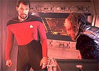
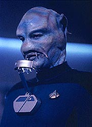
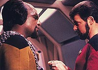
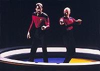
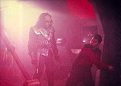

|
MANCHETE
DO EPISÓDIO
Riker
tem a chance de fugir da rotina
graças a intercâmbio em nave Klingon
Episódio
anterior | Próximo
episódio
Sinopse:
Data Estelar: 42506.5.
Um programa especial de intercâmbio traz um Benzite chamado Mendon
a bordo da Enterprise e dá a Riker a oportunidade de se tornar o
primeiro oficial da Federação a servir em uma nave Klingon. O
imediato da Enterprise, antes de assumir seu novo posto, tomou
alguns conselhos de Worf sobre sua espécie, que ainda mantém uma
visão bárbara pelos costumes terrestre de domínio pela força.
 As
informações vêm a calhar quase imediatamente após a chegada de
Riker no cruzador Klingon Pagh, quando o primeiro-oficial precisa
derrotar seu subordinado imediato quando este questiona a autoridade
e a lealdade do humano. Após esse confronto, Riker começa a
verdadeiramente se adaptar e a conviver com os Klingons de forma
harmoniosa.
Pouco antes da nave Klingon partir, Mendon descobre uma bactéria
espacial virulenta está consumindo o casco das duas naves. O
Benzite, desinformado sobre os costumes de naves da Federação,
demora a informar sua descoberta, o que impede a Enterprise de
alertar a Pagh antes que deixasse a região.
Picard ordena que a Enterprise marque um curso de interceptação
com a nave Klingon, a fim de avisar e prestar assistência. Mas os
Klingons descobrem a bactéria antes e passam a acreditar que a nave
da Federação é a verdadeira responsável pela contaminação.
Incapaz de se comunicar com a Pagh camuflada, Picard teme que os
Klingons planejem atacar e ordena que os escudos sejam erguidos, o
que é interpretado pelos Klingons imediatamente como um ato de
agressão.
 Conforme
a Pagh se prepara para atacar a Enterprise, Riker ativa um
transponder de emergência entregue a ele por Worf antes de sua
transferência. O capitão da Pagh teme que seja um explosivo ou um
dispositivo de comunicação e confisca o objeto, somente para ser
teleportado para a Enterprise. Na ausência do capitão, Riker se
torna o comandante temporário da Pagh e ordena a rendição de
Picard e de sua tripulação, permitindo aos Klingons manter sua
honra intacta.
Pouco tempo depois, a Enterprise ajuda a remover as bactérias da
nave Klingon e teleporta o capitão da Pagh de volta a sua nave.
Riker imediatamente cede o comando ao capitão e retorna a seus
deveres a bordo da Enterprise --não sem antes levar uma bela
bordoada do injuriado Klingon.
Comentários:
"A Matter
of Honor" fala de choques culturais. Os dois focos da história
(o que ocorre a bordo da Enterprise, com Mendon, Worf, Wesley e
Picard, e o que ocorre a bordo da Pagh, com Riker e os Klingons)
trabalham exatamente o mesmo tema, o que ajuda a identificar
claramente de onde o episódio nasceu. A premissa do intercâmbio
foi um meio bastante inteligente para mostrar a diferença entre a
cultura e os procedimentos entre diferentes espécies alienígenas.
 Riker
e Mendon servem como contrapontos, olhando dessa perspectiva. Um
deles representa o participante do intercâmbio que está
interessado em aprender mais sobre a cultura no qual está se
inserindo. Já o outro está mais interessado em impor seu estilo
singular ao ambiente em que acaba de chegar. Seria insultar a
inteligência de quem assistiu ao episódio dizer qual dos
personagens foi escolhido e por quê. Basta dizer que foi um modo
interessante de mostrar as diferenças de abordagem entre os
envolvidos em um choque cultural como esses.
Também é desnecessário dizer qual o lado mais interessante da
história e o que oferece mais substância ao episódio. É óbvio
que a presença de Riker na nave Klingon é o grande destaque. Sua rápida
adaptação aos modos Klingons e, ainda assim, sua astúcia para
manter seu lado humano aguçado, conjugando assim o "melhor dos
dois mundos" --fator que foi crucial para evitar o conflito
entre a Enterprise e a nave Klingon, com um belo artifício para
render o capitão da Pagh de seus afazeres no momento necessário--,
foi o que fez desse episódio uma pérola, e um dos melhores da
segunda temporada da série.
 Os
Klingons que vemos aqui ainda são bastante semelhantes ao perfil
que conhecemos durante a Série Clássica e os filmes para
cinema ambientados no século 23. Ainda estão muito distantes do
que viriam a se tornar a partir da terceira temporada, mas já começam
a mostrar que há mais que simples vilões por baixo daquela cabeça
de tartaruga. O conceito de honra Klingon já começa a se
desenvolver, mas ainda há muita pobreza e falta de refino em outros
conceitos centrais dessa cultura, como a importância familiar.
Descobriremos na terceira temporada (mais especificamente em "Sins
of the Father") o quanto é importante a família para os
Klingons. Aqui, descobrimos que um familiar pode ou não desonrar
seus parentes por suas atitudes, mas ainda há um aspecto bastante
tosco e pouco lapidado a esse conceito. Ouvimos frases como "Um
Klingon é seu trabalho, não sua família". Essa idéia
acabaria sendo bastante contrariada nos futuros desenvolvimentos
dessa raça.
Riker é o grande personagem do episódio, mostrando que, quando lhe
é dada a chance, pode ser muito mais que a sombra de Picard na
ponte da Enterprise. Jonathan Frakes cumpre com o papel que lhe
escreveram à altura. Já Mendon serve apenas como alívio cômico,
com seu comportamento arrogante e com as discussões que tem com
Worf e Picard. Wesley faz bom uso de seu contato anterior com um
Benzite (em "Coming of Age"),
tornando sua participação no episódio bem mais leve e menos forçada
do que em outros segmentos.
 Picard,
por incrível que pareça, tem participação bem reduzida, o que
aconteceu raríssimas vezes na série. E Worf, apesar de este ser o
primeiro episódio voltado para os Klingons, é pateticamente
aproveitado. Suas melhores (!) aparições são quando ele entra em
conflito com Mendon, pois servem de alívio cômico. Mas quando ele
resolve falar sério, soa simplesmente como um completo idiota.
Claramente, nem Michael Dorn nem os roteiristas haviam
"encontrado" o personagem.
Visualmente o episódio é bastante interessante, com um verdadeiro
tour por uma nave de batalha Klingon. O ambiente ainda é muito
similar ao que vimos nos filmes da Série Clássica e ainda não
há aquele traço distintivo que encontraríamos futuramente para os
Klingons em A Nova Geração. Mesmo assim, não deixa de ser
uma visita interessante.
Independentemente do assunto tratado ou da coerência com o conjunto
da obra de Jornada nas Estrelas, "A Matter of
Honor" se sustenta especialmente por ser uma grande
aventura, em que o telespectador pode acompanhar Riker em um
ambiente estranho e ao mesmo tempo familiar, no coração da cultura
Klingon. Não há do que reclamar.
Citações:
Riker - "It is
my understanding that one of the duties of the first officer on a
Klingon vessel is to assassinate his captain."
("Pelo que entendi um dos deveres do primeiro-oficial numa nave
Klingon é assassinar seu capitão.")
Worf - "Yes, sir."
("Sim, senhor.")
Riker - "Wouldn't that bring about chaos?"
("Isso não traria o caos?")
Worf - "Of course not. When and if the captain becomes weak
or unable to perform, it is expected that his honorable retirement
should be assisted by his first. Your second officer will
assassinate you for the same reasons."
("Claro que não. Quando e se o capitão se tornar fraco ou
incapaz de atuar, é esperado que sua aposentadoria honrada seja
fornecida por seu primeiro-oficial. Seu segundo oficial irá
assassiná-lo pelas mesmas razões.")
Mendon - "Didn't mean to offend you."
("Não quis ofendê-lo.")
Worf - "You didn't... yet."
("Você não o fez... ainda.")
Riker - "Yes... but it's still moving."
("Sim... mas ainda está se movendo.")
Klag - "Gagh is always best when served live. Would you like
something easier?"
("Gagh é sempre melhor quando servido vivo. Você gostaria de
algo mais fácil?")
Riker - "Easier?"
("Mais fácil?")
Klag - "Yes. If Klingon food is too strong for you, perhaps
we could get one of the females to breast-feed you."
("Sim. Se comida Klingon é muito forte para você, talvez
possamos pegar uma das fêmeas para amamentá-lo.")
Klag - "They are inquisitive. They would like to know how
you would endure."
("Elas estão curiosas. Gostariam de saber como você
aguentaria.")
Riker - "Endure what?"
("Aguentaria o quê?")
Klag - "Them."
("Elas.")
Riker - "One, or both?"
("Uma, ou ambas?")
Trivia:
 Esse episódio alcançou a maior audiência da Nova Geração
até então: 12.2 pontos no Nielsen, o "Ibope" americano.
Esse episódio alcançou a maior audiência da Nova Geração
até então: 12.2 pontos no Nielsen, o "Ibope" americano.
Pela primeira vez o personagem de Colm Meaney recebe um nome:
O'Brien.
John Putch, que já havia interpretado o Benzite Mordock no episódio
"Coming of Age" volta
neste episódio como outro Benzite: Mendon.
Ficha
técnica:
Roteiro de Burton Armus
História de Wanda M. Haight & Gregory Amos e Burton
Armus
Direção de Rob Bowman
Exibido em 06/02/1989
Produção: 034
Elenco:
Patrick Stewart como
Jean-Luc Picard
Jonathan Frakes como William Thomas Riker
Brent Spiner como Data
LeVar Burton como Geordi La Forge
Michael Dorn como Worf
Marina Sirtis como Deanna Troi
Wil Wheaton como Wesley Crusher
Elenco convidado:
Diana Muldaur como
Katherine "Kate" Pulaski
John Putch como alferes Mendon
Christopher Collins como capitão Kargan
Brian Thompson como tenente Klag
Colm Meaney como O'Brien
Peter Parros como oficial tático
Laura Drake como Vekma
Episódio
anterior | Próximo
episódio
|